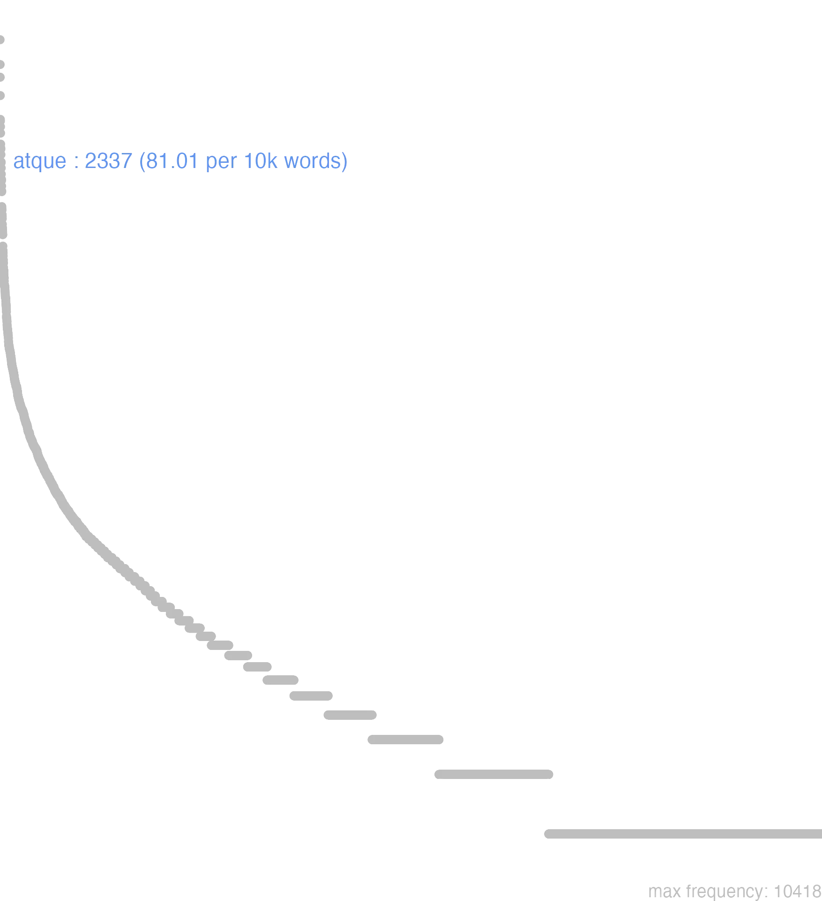

15 atque
15.0.0.1 bases lexicais
id: http://lila-erc.eu/data/id/lemma/90490
classe: conjunção coordenativa
paradigma: indeclinável
outras grafias: ac, acsi, adque
variantes do lema:
no data
atquĕ
no data
15.0.0.2 dicionários tradicionais
ac
conj.
v. atque. atque
ou ac
conj.
Obs.: Atque é geralmente usada antes de vogal ou h, e ac antes de consoante, sendo que tal regra não é de um rigor absoluto.
conj.
v. atque. atque
ou ac
conj.
Obs.: Atque é geralmente usada antes de vogal ou h, e ac antes de consoante, sendo que tal regra não é de um rigor absoluto.
1 I-Sent. próprio E por outro lado, e o que é mais:
2 I-Sent. próprio E entretanto, e contudo frequentemente reforçada por “tamen”;
3 II-Por enfraquecimento de sentido: E.
4 II-Por enfraquecimento de sentido: Do que. como, do mesmo modo que nas comparações:
[EXEMPLOS]
1
faciam… ac lubens Ter. Heaut. 763 «farei … e, o que é mais, com prazer» Cíc. Caec. 24.
2
id sustulit ac tamen eo contentus non fuit Cíc. Verr. 4, 190 «roubou-o e entretanto não se satisfez com isso».
3
o poema tenerum et moratum atque mlle Cíc. Dív. 1, 66 «ó poema fraco, arrastado e mole».
4
vir bonus et prudens did delector ego ac tu Hor. Ep. 1, 16, 32 «eu me regozijo como tu de ser chamado um homem de bem e sensato».
no data
Ac
conjunc.
conj.
conjunc.
1 Cic. e, do que.
Atqueconj.
1 Cic. e, do que, assim como.
2 Virg. logo.
3 Ter. com tudo.
Ac
conjunct.
Adverb. Atque
Conjunct.
conjunct.
[EXEMPLOS]
X
doctus, ac iustus douto, e justo
Adverb. Atque
Conjunct.
1 Pro Et
2 quandoque pro Atqui
3 Pro quam
[EXEMPLOS]
2
atque hoc haud uerisimile uidetur uobis mas isto na verdade naõ vos parece verosimil
3
coepi secus agere, atque initio institueram do que, etc
hic est alio ingenio, atque tu este tem differente condiçaõ, do que vos
mihi nemo amicior est atque Caesar do que Cesar
Ac
cõiunctio copulatiua.
coniunctio copulatiua.
cõiunctio copulatiua.
1 pro et
Atqueconiunctio copulatiua.
1 vt &
2 aliquando pro quàm que
15.0.0.3 dados de corpus
![This chart plots collocate by scoreSUBST, for the headword atque here are all the values plotted: collocate: hic; scoreSUBST: 0. collocate: etiam; scoreSUBST: 0. collocate: ita; scoreSUBST: 0. collocate: bonus; scoreSUBST: 0. collocate: animus; scoreSUBST: 2. collocate: homo; scoreSUBST: 2. collocate: fortis; scoreSUBST: 0. collocate: imperium; scoreSUBST: 2. collocate: simul; scoreSUBST: 0. collocate: alius; scoreSUBST: 0. collocate: amicus; scoreSUBST: 2. collocate: idem; scoreSUBST: 0. collocate: urbs; scoreSUBST: 2. collocate: uirtus; scoreSUBST: 2. collocate: honestus; scoreSUBST: 0. collocate: socius; scoreSUBST: 2. collocate: studium; scoreSUBST: 2. collocate: utinam; scoreSUBST: 0. collocate: templum; scoreSUBST: 2. collocate: liberi; scoreSUBST: 2. collocate: usus; scoreSUBST: 2. collocate: hinc; scoreSUBST: 0. collocate: perditus; scoreSUBST: 0. collocate: integer; scoreSUBST: 0. collocate: incredibilis; scoreSUBST: 0. collocate: ibi; scoreSUBST: 0. collocate: fortuna; scoreSUBST: 1. collocate: sceleratus; scoreSUBST: 0. collocate: ornatus; scoreSUBST: 0. collocate: inopia; scoreSUBST: 2. collocate: barbarus2; scoreSUBST: 0. collocate: sapiens2; scoreSUBST: 0. collocate: diuinus; scoreSUBST: 0. collocate: agrestis; scoreSUBST: 0. collocate: flagitium; scoreSUBST: 2. collocate: furiosus; scoreSUBST: 0. collocate: miseria; scoreSUBST: 2. collocate: amans2; scoreSUBST: 0. collocate: auaritia; scoreSUBST: 2. collocate: delicatus; scoreSUBST: 0. collocate: debilito; scoreSUBST: 0. collocate: mansuetudo; scoreSUBST: 2. collocate: secus; scoreSUBST: 0. collocate: superbia; scoreSUBST: 2. collocate: maritimus; scoreSUBST: 0. collocate: illustris; scoreSUBST: 0. collocate: pecus; scoreSUBST: 2. collocate: obsecro; scoreSUBST: 0. collocate: repentinus; scoreSUBST: 0. collocate: amens; scoreSUBST: 0. collocate: sollicitus; scoreSUBST: 0. collocate: tumultus; scoreSUBST: 2. collocate: luxuria; scoreSUBST: 2. collocate: adeo; scoreSUBST: 0. collocate: horreo; scoreSUBST: 0. collocate: furo; scoreSUBST: 0. collocate: imperitus; scoreSUBST: 0](./Media/wordcloud__xx97-116-113-117-101xx__BY_collocate_scoreSUBST.webp)
![This chart plots collocate by scoreADJ, for the headword atque here are all the values plotted: collocate: hic; scoreADJ: 0. collocate: etiam; scoreADJ: 0. collocate: ita; scoreADJ: 0. collocate: bonus; scoreADJ: 2. collocate: animus; scoreADJ: 0. collocate: homo; scoreADJ: 0. collocate: fortis; scoreADJ: 2. collocate: imperium; scoreADJ: 0. collocate: simul; scoreADJ: 0. collocate: alius; scoreADJ: 0. collocate: amicus; scoreADJ: 0. collocate: idem; scoreADJ: 0. collocate: urbs; scoreADJ: 0. collocate: uirtus; scoreADJ: 0. collocate: honestus; scoreADJ: 2. collocate: socius; scoreADJ: 0. collocate: studium; scoreADJ: 0. collocate: utinam; scoreADJ: 0. collocate: templum; scoreADJ: 0. collocate: liberi; scoreADJ: 0. collocate: usus; scoreADJ: 0. collocate: hinc; scoreADJ: 0. collocate: perditus; scoreADJ: 2. collocate: integer; scoreADJ: 2. collocate: incredibilis; scoreADJ: 2. collocate: ibi; scoreADJ: 0. collocate: fortuna; scoreADJ: 0. collocate: sceleratus; scoreADJ: 2. collocate: ornatus; scoreADJ: 2. collocate: inopia; scoreADJ: 0. collocate: barbarus2; scoreADJ: 2. collocate: sapiens2; scoreADJ: 2. collocate: diuinus; scoreADJ: 2. collocate: agrestis; scoreADJ: 2. collocate: flagitium; scoreADJ: 0. collocate: furiosus; scoreADJ: 2. collocate: miseria; scoreADJ: 0. collocate: amans2; scoreADJ: 2. collocate: auaritia; scoreADJ: 0. collocate: delicatus; scoreADJ: 2. collocate: debilito; scoreADJ: 0. collocate: mansuetudo; scoreADJ: 0. collocate: secus; scoreADJ: 0. collocate: superbia; scoreADJ: 0. collocate: maritimus; scoreADJ: 2. collocate: illustris; scoreADJ: 2. collocate: pecus; scoreADJ: 0. collocate: obsecro; scoreADJ: 0. collocate: repentinus; scoreADJ: 2. collocate: amens; scoreADJ: 2. collocate: sollicitus; scoreADJ: 2. collocate: tumultus; scoreADJ: 0. collocate: luxuria; scoreADJ: 0. collocate: adeo; scoreADJ: 0. collocate: horreo; scoreADJ: 0. collocate: furo; scoreADJ: 0. collocate: imperitus; scoreADJ: 2](./Media/wordcloud__xx97-116-113-117-101xx__BY_collocate_scoreADJ.webp)
![This chart plots collocate by scoreVERBO, for the headword atque here are all the values plotted: collocate: hic; scoreVERBO: 0. collocate: etiam; scoreVERBO: 0. collocate: ita; scoreVERBO: 0. collocate: bonus; scoreVERBO: 0. collocate: animus; scoreVERBO: 0. collocate: homo; scoreVERBO: 0. collocate: fortis; scoreVERBO: 0. collocate: imperium; scoreVERBO: 0. collocate: simul; scoreVERBO: 0. collocate: alius; scoreVERBO: 0. collocate: amicus; scoreVERBO: 0. collocate: idem; scoreVERBO: 0. collocate: urbs; scoreVERBO: 0. collocate: uirtus; scoreVERBO: 0. collocate: honestus; scoreVERBO: 0. collocate: socius; scoreVERBO: 0. collocate: studium; scoreVERBO: 0. collocate: utinam; scoreVERBO: 0. collocate: templum; scoreVERBO: 0. collocate: liberi; scoreVERBO: 0. collocate: usus; scoreVERBO: 0. collocate: hinc; scoreVERBO: 0. collocate: perditus; scoreVERBO: 0. collocate: integer; scoreVERBO: 0. collocate: incredibilis; scoreVERBO: 0. collocate: ibi; scoreVERBO: 0. collocate: fortuna; scoreVERBO: 0. collocate: sceleratus; scoreVERBO: 0. collocate: ornatus; scoreVERBO: 0. collocate: inopia; scoreVERBO: 0. collocate: barbarus2; scoreVERBO: 0. collocate: sapiens2; scoreVERBO: 0. collocate: diuinus; scoreVERBO: 0. collocate: agrestis; scoreVERBO: 0. collocate: flagitium; scoreVERBO: 0. collocate: furiosus; scoreVERBO: 0. collocate: miseria; scoreVERBO: 0. collocate: amans2; scoreVERBO: 0. collocate: auaritia; scoreVERBO: 0. collocate: delicatus; scoreVERBO: 0. collocate: debilito; scoreVERBO: 2. collocate: mansuetudo; scoreVERBO: 0. collocate: secus; scoreVERBO: 0. collocate: superbia; scoreVERBO: 0. collocate: maritimus; scoreVERBO: 0. collocate: illustris; scoreVERBO: 0. collocate: pecus; scoreVERBO: 0. collocate: obsecro; scoreVERBO: 2. collocate: repentinus; scoreVERBO: 0. collocate: amens; scoreVERBO: 0. collocate: sollicitus; scoreVERBO: 0. collocate: tumultus; scoreVERBO: 0. collocate: luxuria; scoreVERBO: 0. collocate: adeo; scoreVERBO: 0. collocate: horreo; scoreVERBO: 2. collocate: furo; scoreVERBO: 2. collocate: imperitus; scoreVERBO: 0](./Media/wordcloud__xx97-116-113-117-101xx__BY_collocate_scoreVERBO.webp)
![This chart plots collocate by scoreADV, for the headword atque here are all the values plotted: collocate: hic; scoreADV: 0. collocate: etiam; scoreADV: 2. collocate: ita; scoreADV: 2. collocate: bonus; scoreADV: 0. collocate: animus; scoreADV: 0. collocate: homo; scoreADV: 0. collocate: fortis; scoreADV: 0. collocate: imperium; scoreADV: 0. collocate: simul; scoreADV: 3. collocate: alius; scoreADV: 0. collocate: amicus; scoreADV: 0. collocate: idem; scoreADV: 0. collocate: urbs; scoreADV: 0. collocate: uirtus; scoreADV: 0. collocate: honestus; scoreADV: 0. collocate: socius; scoreADV: 0. collocate: studium; scoreADV: 0. collocate: utinam; scoreADV: 2. collocate: templum; scoreADV: 0. collocate: liberi; scoreADV: 0. collocate: usus; scoreADV: 0. collocate: hinc; scoreADV: 2. collocate: perditus; scoreADV: 0. collocate: integer; scoreADV: 0. collocate: incredibilis; scoreADV: 0. collocate: ibi; scoreADV: 2. collocate: fortuna; scoreADV: 0. collocate: sceleratus; scoreADV: 0. collocate: ornatus; scoreADV: 0. collocate: inopia; scoreADV: 0. collocate: barbarus2; scoreADV: 0. collocate: sapiens2; scoreADV: 0. collocate: diuinus; scoreADV: 0. collocate: agrestis; scoreADV: 0. collocate: flagitium; scoreADV: 0. collocate: furiosus; scoreADV: 0. collocate: miseria; scoreADV: 0. collocate: amans2; scoreADV: 0. collocate: auaritia; scoreADV: 0. collocate: delicatus; scoreADV: 0. collocate: debilito; scoreADV: 0. collocate: mansuetudo; scoreADV: 0. collocate: secus; scoreADV: 2. collocate: superbia; scoreADV: 0. collocate: maritimus; scoreADV: 0. collocate: illustris; scoreADV: 0. collocate: pecus; scoreADV: 0. collocate: obsecro; scoreADV: 0. collocate: repentinus; scoreADV: 0. collocate: amens; scoreADV: 0. collocate: sollicitus; scoreADV: 0. collocate: tumultus; scoreADV: 0. collocate: luxuria; scoreADV: 0. collocate: adeo; scoreADV: 2. collocate: horreo; scoreADV: 0. collocate: furo; scoreADV: 0. collocate: imperitus; scoreADV: 0](./Media/wordcloud__xx97-116-113-117-101xx__BY_collocate_scoreADV.webp)
![This chart plots collocate by scoreFUNC, for the headword atque here are all the values plotted: collocate: hic; scoreFUNC: 0. collocate: etiam; scoreFUNC: 0. collocate: ita; scoreFUNC: 0. collocate: bonus; scoreFUNC: 0. collocate: animus; scoreFUNC: 0. collocate: homo; scoreFUNC: 0. collocate: fortis; scoreFUNC: 0. collocate: imperium; scoreFUNC: 0. collocate: simul; scoreFUNC: 0. collocate: alius; scoreFUNC: 0. collocate: amicus; scoreFUNC: 0. collocate: idem; scoreFUNC: 0. collocate: urbs; scoreFUNC: 0. collocate: uirtus; scoreFUNC: 0. collocate: honestus; scoreFUNC: 0. collocate: socius; scoreFUNC: 0. collocate: studium; scoreFUNC: 0. collocate: utinam; scoreFUNC: 0. collocate: templum; scoreFUNC: 0. collocate: liberi; scoreFUNC: 0. collocate: usus; scoreFUNC: 0. collocate: hinc; scoreFUNC: 0. collocate: perditus; scoreFUNC: 0. collocate: integer; scoreFUNC: 0. collocate: incredibilis; scoreFUNC: 0. collocate: ibi; scoreFUNC: 0. collocate: fortuna; scoreFUNC: 0. collocate: sceleratus; scoreFUNC: 0. collocate: ornatus; scoreFUNC: 0. collocate: inopia; scoreFUNC: 0. collocate: barbarus2; scoreFUNC: 0. collocate: sapiens2; scoreFUNC: 0. collocate: diuinus; scoreFUNC: 0. collocate: agrestis; scoreFUNC: 0. collocate: flagitium; scoreFUNC: 0. collocate: furiosus; scoreFUNC: 0. collocate: miseria; scoreFUNC: 0. collocate: amans2; scoreFUNC: 0. collocate: auaritia; scoreFUNC: 0. collocate: delicatus; scoreFUNC: 0. collocate: debilito; scoreFUNC: 0. collocate: mansuetudo; scoreFUNC: 0. collocate: secus; scoreFUNC: 0. collocate: superbia; scoreFUNC: 0. collocate: maritimus; scoreFUNC: 0. collocate: illustris; scoreFUNC: 0. collocate: pecus; scoreFUNC: 0. collocate: obsecro; scoreFUNC: 0. collocate: repentinus; scoreFUNC: 0. collocate: amens; scoreFUNC: 0. collocate: sollicitus; scoreFUNC: 0. collocate: tumultus; scoreFUNC: 0. collocate: luxuria; scoreFUNC: 0. collocate: adeo; scoreFUNC: 0. collocate: horreo; scoreFUNC: 0. collocate: furo; scoreFUNC: 0. collocate: imperitus; scoreFUNC: 0](./Media/wordcloud__xx97-116-113-117-101xx__BY_collocate_scoreFUNC.webp)
![This charts plots the frequency of lemma by author_Frequencies. The Sallustius subcorpus registers the highest normalized frequency, with the value of 162.32 and an absolute frequency of 175. The Suetonius subcorpus follows, with a normalized frequency of 88.2 and an absolute frequency of 8. the subcorpus with the least normalized frequency is Hieronymus with the normalized value of 6.74 and an absolute freqeuncy of 3. here are all the values: subcorpus: Caesar ; normalized frequency: 349 ; absolute frequency: 131.807538333711. subcorpus: Cicero ; normalized frequency: 1366 ; absolute frequency: 85.0963095861055. subcorpus: Horatius ; normalized frequency: 112 ; absolute frequency: 99.4583074327324. subcorpus: Ovidius ; normalized frequency: 11 ; absolute frequency: 18.8743994509266. subcorpus: Phaedrus ; normalized frequency: 8 ; absolute frequency: 12.1451343555488. subcorpus: Sallustius ; normalized frequency: 175 ; absolute frequency: 162.322604582135. subcorpus: Seneca ; normalized frequency: 225 ; absolute frequency: 41.9924973404752. subcorpus: Suetonius ; normalized frequency: 8 ; absolute frequency: 88.2028665931643. subcorpus: Tacitus ; normalized frequency: 44 ; absolute frequency: 151.047030552695. subcorpus: Vergilius ; normalized frequency: 36 ; absolute frequency: 69.4980694980695. subcorpus: Hieronymus ; normalized frequency: 3 ; absolute frequency: 6.74005841383959](./Media/barchart__xx97-116-113-117-101xx__lemma_BY_author_Frequencies.webp)
![This charts plots the frequency of lemma by genre_Frequencies. The Prosa.histórica subcorpus registers the highest normalized frequency, with the value of 140.22 and an absolute frequency of 576. The Prosa.filosófica subcorpus follows, with a normalized frequency of 43 and an absolute frequency of 261. the subcorpus with the least normalized frequency is Prosa.ficcional with the normalized value of 6.74 and an absolute freqeuncy of 3. here are all the values: subcorpus: Prosa.histórica ; normalized frequency: 576 ; absolute frequency: 140.217629445702. subcorpus: Prosa.filosófica ; normalized frequency: 261 ; absolute frequency: 42.9976441903758. subcorpus: Prosa.oratória ; normalized frequency: 1128 ; absolute frequency: 108.302209249854. subcorpus: Prosa.epistolográfica ; normalized frequency: 145 ; absolute frequency: 38.4217917803863. subcorpus: Poesia.lírica ; normalized frequency: 112 ; absolute frequency: 94.2205771010347. subcorpus: Poesia.didática ; normalized frequency: 19 ; absolute frequency: 16.116718975316. subcorpus: Poesia.trágica ; normalized frequency: 57 ; absolute frequency: 49.5135510771369. subcorpus: Poesia.épica ; normalized frequency: 36 ; absolute frequency: 69.4980694980695. subcorpus: Prosa.ficcional ; normalized frequency: 3 ; absolute frequency: 6.74005841383959](./Media/barchart__xx97-116-113-117-101xx__lemma_BY_genre_Frequencies.webp)
![This charts plots the frequency of lemma by period_Frequencies. The II.d.C. subcorpus registers the highest normalized frequency, with the value of 136.13 and an absolute frequency of 52. The I.a.C. subcorpus follows, with a normalized frequency of 94.86 and an absolute frequency of 2038. the subcorpus with the least normalized frequency is IV.d.C. with the normalized value of 6.74 and an absolute freqeuncy of 3. here are all the values: subcorpus: I.a.C. ; normalized frequency: 2038 ; absolute frequency: 94.8568768908541. subcorpus: I.d.C. ; normalized frequency: 244 ; absolute frequency: 37.325990515527. subcorpus: II.d.C. ; normalized frequency: 52 ; absolute frequency: 136.125654450262. subcorpus: IV.d.C. ; normalized frequency: 3 ; absolute frequency: 6.74005841383959](./Media/barchart__xx97-116-113-117-101xx__lemma_BY_period_Frequencies.webp)
atque haec huius modi sunt
Cic.Att.1.1.2
E é deste modo que estão esses assuntos. [JDD]
ecce uir fortis ac strenuus
Sen.Ep.9.19
Eis aí um homem forte e valoroso! [JDD]
ita fac oro atque obsecro
Sen.Ep.19.1
Faz assim, peço e suplico. [JDD]
Atque etiam alia divisio est officii
Cic.Off.1.7
E há ainda uma outra divisão do dever. [JDD]
semper idem uelle atque idem nolle
Sen.Ep.20.5
Querer sempre o mesmo e não querer sempre o mesmo. [JDD]
est haec diuina atque incredibilis uirtus imperatoris
Cic.Man.36
É este o divino e incrível valor desse general. [JDD]
nunc homo audacissimus atque amentissimus hoc cogitat
Cic.Ver.1.7
7 Agora esse homem ousadíssimo e completamente louco maquina isto. [JDD]
Atque ita locutus improbam leto dedit .
Phaed.1.22
E, tendo assim falado, matou a malvada. [JDD]
Atque ita correptum lacerat iniusta nece .
Phaed.1.1
E assim, o agarra e dilacera com injusta morte. [JDD]
atque utinam ipse Varro incumbat in causam
Cic.Att.3.15.3
E oxalá o próprio Varrão se encarregue da causa! [JDD]
eos atque alios omnis malum publicum alebat
Sal.Cat.37.7
A esses e a todos os outros o mal público alimentava. [JDD]
non secus ac si ego essem imperator
Cic.Att.4.19.2
Não o trataria de outro modo, se eu fosse um general. [JDD]
ego princeps in adiutoribus atque adeo secundus
Cic.Att.1.17.9
Eu fui o primeiro entre os apoiadores, na verdade, o segundo. [JDD]
ita ancipiti proelio diu atque acriter pugnatum est
Caes.Gal.1.26.1
Assim, em dupla batalha, combateu-se por longo tempo e encarniçadamente. [JDD]
atque hoc in illis tribunis plebis non laedebat
Cic.Att.3.23.4
E este perigo não atingia aqueles tribunos da plebe. [JDD, de outra edição]
esse putat nusquam atque animo peiora veretur .
Ov.Met.1.586
imagina que não está em nenhum lugar e, em seu espírito, teme coisas piores. [JDD]
at illum ingens cura atque laetitia simul occupauere
Sal.Cat.46.2
Mas uma enorme preocupaçãp e alegria ao mesmo tempo apoderaram-se dele. [JDD]
satis enim acutus et permodestus ac bonae frugi
Cic.Att.4.8A.3
Pois é bastante agudo e muito modesto e de bom caráter. [JDD]
hic Romanorum aduentum exspectare atque ibi decertare constituisse
Caes.Gal.4.19.3
tinham decidido esperar ali a chegada dos romanos e ali combater. [JDD]
sed ubi periculum aduenit inuidia atque superbia post fuere
Sal.Cat.23.6
Mas depois que chegou o perigo, a inveja e a soberba ficaram para trás. [JDD]
atque utinam ut culpam sic etiam suspicionem uitare potuisses
Cic.Phil.1.33.8
E quem dera, assim como a culpa, tivesses podido também evitar a suspeita! [JDD]
hoc quanti putas esse ad famam hominum ac uoluntatem
Cic.Mur.38
Quanto achas que isso vale para a fama e disposição favorável dos homens? [JDD]
simul atque increpuit suspicio tumultus artes ilico nostrae conticiscunt
Cic.Mur.22
Assim que soou a suspeita de uma rebelião, nossas atividades se calam. [JDD]
perge modo atque hinc te reginae ad limina perfer
Verg.A.1.389
Avança somente e vai-te daqui até os umbrais da rainha. [JDD]
ibi Orgetorigis filia atque unus e filiis captus est
Caes.Gal.1.26.4
Ali foram capturados a filha e um dos filhos de Orgetórige. [JDD]
atque hoc quidem omnes mortales et intellegunt et re probant
Cic.Amici.24
E, na verdade, todos os mortais entendem isso e aprovam na realidade. [JDD]
magna atque incredibilia sunt in rem publicam huius merita legionis
Cic.Phil.14.31.8
Grandes e incríveis são os serviços desta legião para com a república. [JDD]
atque his irascebamur hos requirebamus his non nulli etiam minabantur
Cic.Lig.33
E estávamos irritados com eles, os procurávamos, alguns até mesmo os ameaçavam. [JDD]
iam uero urbes coloniarum ac municipiorum respondebunt Catilinae tumulis siluestribus
Cic.Catil.2.24.8
Agora as cidades das colônias e dos municípios responderão aos montes silvestres de Catilina. [JDD]
uirgis iste caederet sine causa socium populi Romani atque amicum
Cic.Ver.2.4.86.10
Cortaria de varas esse sujeito, sem motivo, a um aliado e amigo do povo romano? [JDD]
sic neque agri cultura nec ratio atque usus belli intermittitur
Caes.Gal.4.1.6
Assim nem a agricultura nem a arte e prática da guerra são interrompidos. [JDD, de outra edição]
accipiet in optimam partem C. Pansa fortissimus consul atque optimus
Cic.Phil.7.5.7
Caio Pansa, valorosíssimo e excelente cônsul vai aceitar [o que vou dizer] do melhor modo. [JDD]
at nos uirtutes ipsas inuertimus atque sincerum furimus uas incrustare
Hor.S.1.3.55
Mas as próprias qualidades nós invertemos e desejamos manchar um vaso limpo. [JDD]
me uidelicet latronem ac sicarium abiecti homines et perditi describebant
Cic.Mil.47
Sem dúvida, esses homens abjetos e perversos me representavam como um bandido e assassino. [JDD]
uir fortis ac sapiens non fugere debet e uita sed exire
Sen.Ep.24.25
O homem forte e sábio não deve fugir da vida, mas sair dela. [JDD]
atque huiusce rei coniecturam de tuo ipsius studio Serui facillime ceperis
Cic.Mur.9
E muito facilmente, Sérvio, farás uma conjectura disso por tua própria ocupação. [JDD]
nota atque instituta ratione magno militum studio paucis diebus opus efficitur
Caes.Gal.6.9.4
Conhecido e definido o seu método, em poucos dias, com o empenho dos soldados, a obra é concluída. [JDD]
nec meum imperium ac mitto imperium non simultatem meam reverteri saltem
Cic.Att.2.19.1
“E não teve respeito nem pela minha autoridade, e deixo de lado a autoridade, nem, ao menos, pela minha cólera!” [JDD, de outra edição]
quod tempus animo semper ac mente horrui adest profecto rebus extremum meis
Sen.Ag.226
O momento pelo qual eu sempre senti horror no espírito e na mente está chegando, sem dúvida, como um fim para as minhas coisas. [JDD]
nam quid ego dicam populum ac uolgus imperitorum ludis magno opere delectari
Cic.Mur.38
Pois para que eu vou dizer que o povo e a massa de incultos se deleitam muitíssimo com os jogos? [JDD]
novi enim te et non ignoro quam sit amor omnis sollicitus atque anxius
Cic.Att.2.24.1
pois eu te conheço e não ignoro o quanto a tua afeição é toda preocupada e angustiada. [JDD]
quae mulier interficere sceleratum ac perniciosum ciuem non auderet si periculum non timeret
Cic.Mil.82
Que mulher não ousaria matar um cidadão celerado e pernicioso, se não temesse o perigo? [JDD]
hiemis enim non auaritiae perfugium maiores nostri in sociorum atque amicorum tectis esse uoluerunt
Cic.Man.39
Pois nossos antepassados quiseram que, nos tetos dos aliados e dos amigos, houvesse um refúgio para o inverno, não para a cobiça. [JDD]
neque multum frumento sed maximam partem lacte atque pecore uiuunt multumque sunt in uenationibus
Caes.Gal.4.1.8
Não vivem muito do trigo, mas quase que totalmente do leite e do gado e são muito dados à caça. [JDD]
occulta fati et ostentis ac responsis destinatum Uespasiano liberisque eius imperium post fortunam credidimus
Tac.Hist.1.10.15
Após sua boa fortuna, acreditamosque, tanto pelos presságios como pela respostas dos oráculos, os segredos do destino tinham o império destinado a Vespasiano e seus filhos. [JDD]
neque ego ceteras copias ornamenta praesidia uestra cum illius latronis inopia atque egestate conferre debeo
Cic.Catil.2.24.9
E não devo comparar as demais tropas, os vossos petrechos, guarnições com a pobreza e escassez daquele ladrão. [JDD]
nolo enim cuiusquam fortis atque inlustris uiri ne minimum quidem erratum cum maxima laude coniungere
Cic.Cael.43
Pois não quero misturar nem mesmo o mais insignificante erro com a máxima glória de nenhum homem valoroso e ilustre. [JDD, de outra edição]
in eam demissus es uitam quae numquam tibi terminum miseriarum ac seruitutis ipsa factura sit
Sen.Ep.19.6
Foste jogado a essa vida que nunca irá pôr um fim às tuas misérias e servidão. [JDD]
hic di immortales ut supra dixi mentem illi perdito ac furioso dederunt ut huic faceret insidias
Cic.Mil.88
Aqui os deuses imortais, como disse acima, deram idéia a este homem perverso e louco para fazer uma emboscada àquele. [JDD]
nondum enim nostris laudibus quibus utar postea sed prope inimicorum confessione uirum bonum atque integrum hominem defendimus
Cic.Mur.14
Pois estamos defendendo um homem de bem e uma pessoa íntegra não ainda com os nossos elogios, que usarei depois, mas quase com a confissão dos inimigos. [JDD]
15.0.0.4 Diagrama de Zipf
